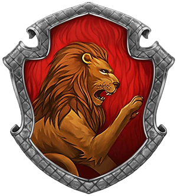

Congratulations! You got sorted into
Gryffindor!

‘You might belong in Gryffindor,
Where dwell the brave at heart,
Their daring, nerve and chivalry
Set Gryffindors apart.’
Gryffindor is one of the four Houses of Hogwarts School of Witchcraft and Wizardry and was founded by Godric Gryffindor.
Gryffindor instructed the Sorting Hat to choose students possessing characteristics he most valued, such as courage,
chivalry, and determination, to be sorted into his house. The emblematic animal is a lion and Gryffindor’s colours consist
of scarlet and gold.
Courage
Bravery
Determination
Daring
Nerve
Chivalry